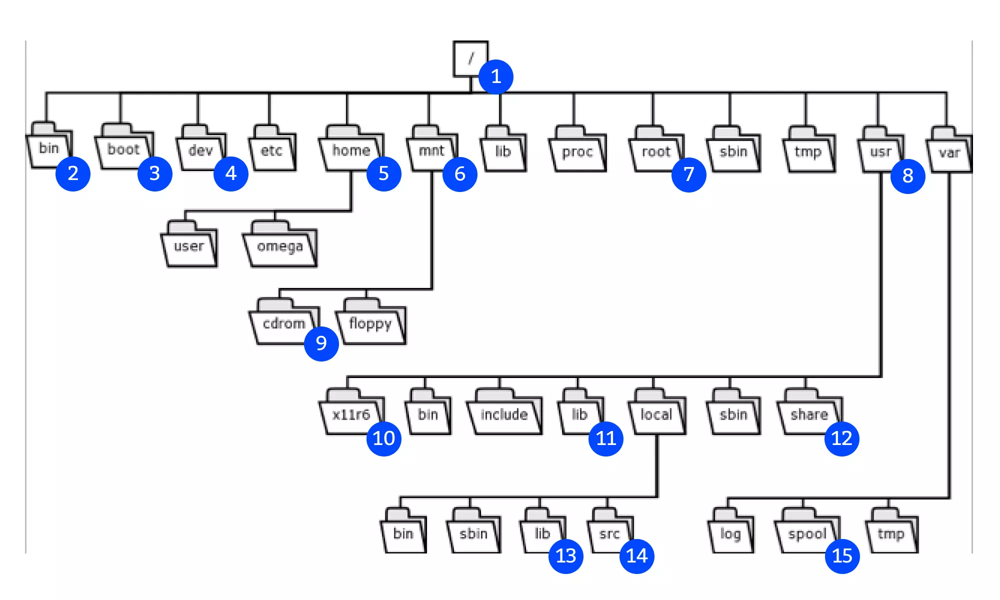
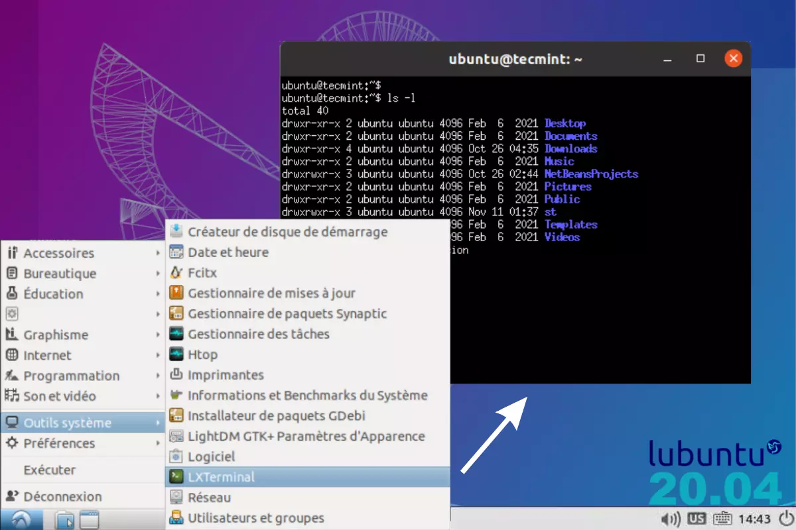
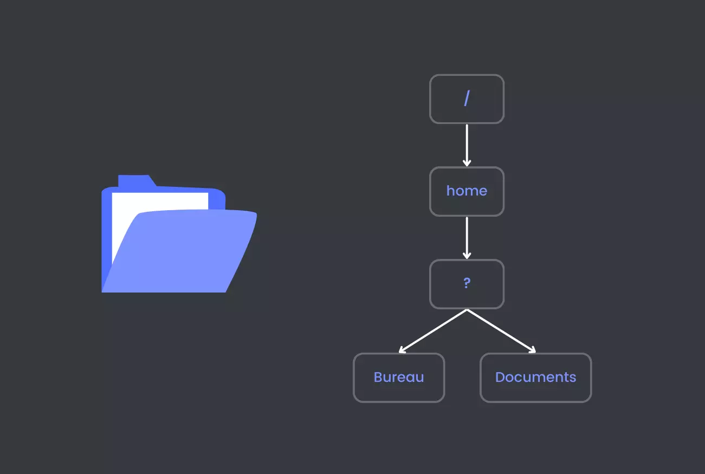
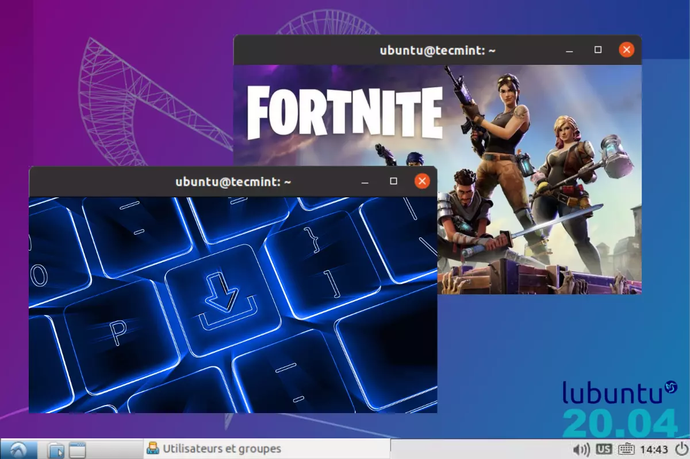
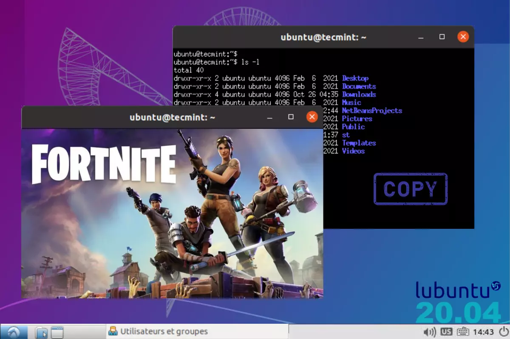

TP3 : System d'exploitation
Problématique : Comment utiliser notre système d’exploitation avec des lignes de commandes ?
Un système d'exploitation, ou OS pour Operating System, définit un ensemble de programmes chargé d'établir une relation entre les différentes ressources matérielles, les applications et l'utilisateur.
Dans un ordinateur, le système d'exploitation a plusieurs missions. Il gère, entre autres, le processeur et la mémoire vive, optimise l'exécution des applications en leur attribuant les ressources nécessaires, fournit un certain nombre d'informations sur le bon fonctionnement de l'ordinateur, etc. Il permet l'utilisation de périphériques dans les meilleures conditions et protège l'accès aux ressources.
Nous aborderons la partie du programme Architectures matérielles et systèmes d’exploitation avec les contenus Systèmes d’exploitation. Les capacités attendues sont Utiliser les commandes de base en ligne de commande ; Gérer les droits et permissions d’accès aux fichiers.
Question 1
Les données sont organisées sur le disque dur (ou bien SSD aujourd'hui) sous la forme de fichiers. Ce sont généralement de simples morceaux d'une mémoire de masse, sur lesquels un programme peut écrire ce qu'il veut. Le système de fichiers attribuent plusieurs caractéristiques à chaque fichier.
Voici une arborescence des fichiers Linux de votre ordinateur. À quels numéros sur l'image correspondent les fichiers demandés ci-dessous ?

Question 2
Depuis n'importe quel ordinateur, il est possible d'accéder à l'intégralité de vos dossiers/fichiers sans passer par une interface. Il faut pour cela écrire des lignes de commandes simples dans un terminal. Pour ouvrir ce logiciel, tapez dans la barre de recherche d'application Linux (en bas à gauche) ceci : Xterm.
Pour répondre aux questions suivantes, envoyez au terminal les commandes demandées en vert puis copier/coller sa réponse.

Question 4
Vous connaissez maintenant 5 commandes très utiles pour l'organisation de fichiers. Que diriez-vous de suivre ce tutoriel pour vous entrainer à les utiliser ? Nous allons créer un espace de stockage réservé aux TP de NSI.
Pour cet entrainement, complétez les cases vides par ce qu'il manque, grâce aux commandes en vert correspondantes.

Étape 1
Créer un dossier pour ranger vos fichiers de TP dans le répertoire « Documents ».
• À l'aide de CD, se rendre dans le bon répertoire de travail avec la ligne de commande :
• À l'aide de MKDIR, créez un répertoire à votre nom avec la ligne de commande :
Étape 2
Vérifier que le répertoire existe bien dans le répertoire « Documents ».
• À l'aide de LS, listez les fichiers et les répertoires :
Étape 3
Transférer vos fichiers dans ce répertoire.
• À l'aide de MV, sélectionnez les bons fichiers à la place du texte bleu, avant le transfert :
Étape 4
Vérifier si le fichier a bien été transféré en essayant 2 commandes.
• À l'aide de LS, listez les fichiers avec un lien absolu :
( un chemin absolu prend pour référence le début de l’arborescence de fichiers, la racine ; il commence donc toujours par le symbole "/" )
• À l'aide de LS, listez les fichiers avec un lien relatif :
( un chemin relatif dépend du répertoire courant où se trouve l’utilisateur au moment où il fait référence au fichier. Ici nous somme déjà dans le répertoire /home/nsiX )
Question 5
Dans ce deuxième entrainement, séparé entre la question 5 et 6, vous allez affiner vos compétences en ligne de commandes. Vous pouvez retourner à vos précedentes réponses pour vous aider. Préparez vos claviers, c'est parti !
Pour cet entrainement, complétez les cases vides par ce qu'il manque, grâce aux commandes en vert correspondantes.

Étape 1
Télécharger l’image fornite-hero-edited.jpg via ce bouton.
Étape 2
Ouvrir le dossier des téléchargements par le terminal.
• En ligne de commande, se rendre dans le répertoire Téléchargements :
• En ligne de commande, vérifiez que la photo se soit bien enregistrée :
Étape 3
Se déplacer à travers les répertoires de l'ordinateur.
• Tapez la commande CD .. pour revenir au répertoire /home/nsi comme affiché ici :
• Exécutez la commande CD ../.. pour se retrouver dans le répertoire illustré ci-dessous :
• En ligne de commande, retournez directement à votre répertoire /home/nsi :
Question 6
Dans ce deuxième entrainement, séparé entre la question 5 et 6, vous allez affiner vos compétences en ligne de commandes. Vous pouvez retourner à vos précedentes réponses pour vous aider. Préparez vos claviers, c'est parti !
Pour cet entrainement, complétez les cases vides par ce qu'il manque, grâce aux commandes en vert correspondantes.

Étape 4
Copier l’image téléchargée directement dans votre répertoire des TP.
• En ligne de commande, se rendre dans le répertoire Téléchargements où est stocké le fichier fornite-hero-edited.jpg :
• Copiez l'image dans votre répertoire des TP en remplaçant nom_fichier et destination de la commande cp nom_fichier destination par les termes réels :
• Précisez si vous avez utilisé un lien :
Étape 6
Enlever les fichiers en trop.
• Avec la commande RM NomFichier, supprimez fornite-hero-edited.jpg dans le répertoire Téléchargements :
Bravo ! Vous avez terminé ce deuxième entrainement !
Question 7
Dans ce troisième entrainement, séparé entre la question 7 et 8, vous gérerez les droits et permissions d’accès aux fichiers en ligne de commandes. Vous pouvez retourner à vos précedentes réponses pour vous aider. Préparez vos claviers, c'est re-parti !
Pour cet entrainement, complétez les cases vides par ce qu'il manque, grâce aux commandes en vert correspondantes.
Étape 1
Télécharger le fichier good_at_it-jgal.sh via ce bouton.
Étape 2
Copier ce fichier téléchargé directement dans votre répertoire des TP.
• Placez-vous préalablement dans votre répertoire /home/nsi
• Copiez le fichier dans votre répertoire des TP en remplaçant nom_fichier et destination de la commande cp nom_fichier destination par les termes réels :
Étape 3
Afficher les caractéristiques d'un fichier.
• En ligne de commande, se rendre dans votre répertoire des TP où est maintenant stocké le fichier good_at_it-jgal.sh :
• Tapez la commande LS -L pour afficher les caractéristiques des fichiers du répertoire actuel. Collez celle pour good_at_it-jgal.sh ici :
Question 8
Dans ce troisième entrainement, séparé entre la question 7 et 8, vous gérerez les droits et permissions d’accès aux fichiers en ligne de commandes. Vous pouvez retourner à vos précedentes réponses pour vous aider. Préparez vos claviers, c'est re-parti !
Pour cet entrainement, complétez les cases vides par ce qu'il manque, grâce aux commandes en vert correspondantes.
Étape 4
Aidez-vous de la documention pour les questions suivantes, via ce bouton.
Étape 5
Comprendre les permissions d’accès aux fichiers.
• À l'aide de la documentation, notez et décodez les caractéristiques du fichiers good_at_it-jgal.sh :
• Du coup, qui peut éxecuter ce script ?
Étape 6
Modifier des permissions d’accès aux fichiers.
• Complétez la commande pour donner les droits au fichier good_at_it-jgal.sh en exécution pour tous :
Bravo ! Vous avez terminé ce troisième entrainement !
Question 9
Dans ce dernier entrainement, vous allez apprendre à exécuter tous types de programme. Vous pouvez retourner à vos précedentes réponses pour vous aider. Dernière ligne droite, c'est parti !
Pour cet entrainement, complétez les cases vides par ce qu'il manque, grâce aux commandes en vert correspondantes.
Étape 1
Savoir exécuter un fichier.
• Avec la commande bash good_at_it-jgal.sh, exécutez le fichier du précédent entrainement et copiez le texte du fichier affiché (./ peut être utilisée à la place de la commande bash) :
Étape 2
Modifier un fichier exécutable.
• En ligne de commande, donnez les droits au fichier good_at_it-jgal.sh en écriture pour tous :
• Avec la commande geany good_at_it-jgal.sh, ouvrez le fichier dans l'éditeur de texte Geany.
• Ajoutez la phrase "I am the best" après la ligne Je sais..., puis enregistrez.
Étape 3
Éxécuter un fichier à nouveau.
• En ligne de commande, souvenez-vous comment lancer le script good_at_it-jgal.sh dans le terminal :
Bravo ! Vous avez entièrement terminé ce TP n°3. Qu'en avez-vous pensé ?